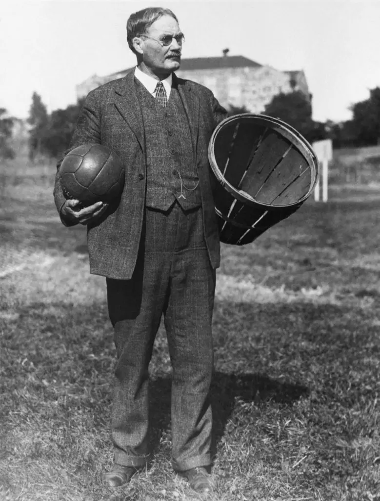
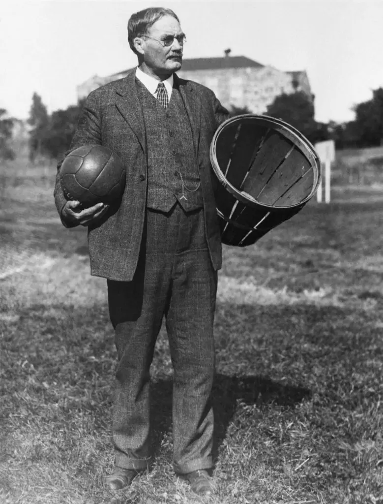
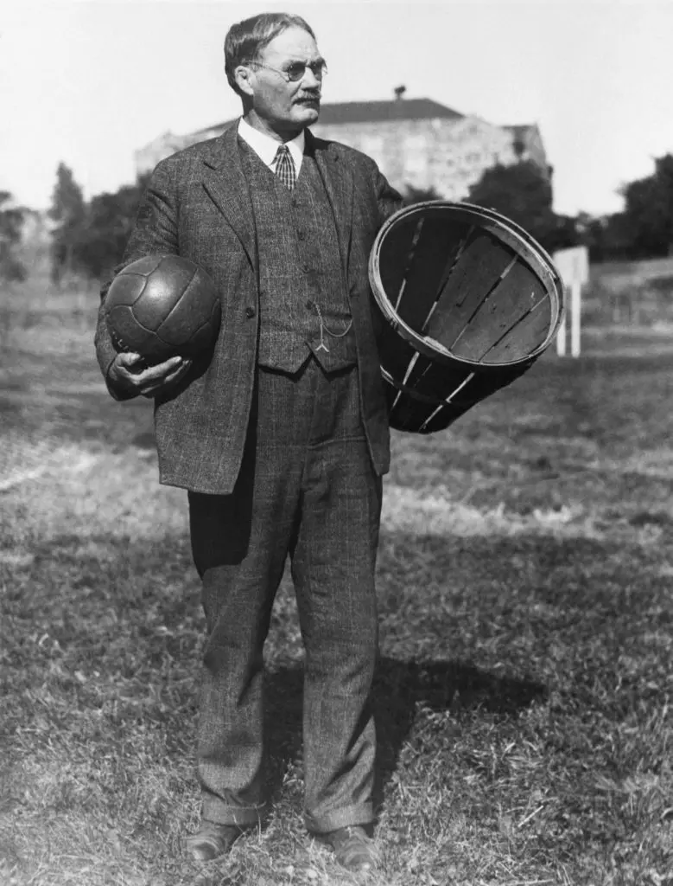

NBA 的成立
1946年美國籃球協會（BAA）成立，後與國家籃球聯盟（NBL）合併，1949年成為「國家籃球協會」（NBA）。NBA不僅是運動比賽，更是娛樂產業的重要組成，結合明星行銷、全球轉播與社群媒體，成為全球最具影響力的職業聯賽。
 

by 蕭遙
籃球起源於1891年，由加拿大籍體育教師詹姆斯·奈史密斯博士在美國麻州發明，當時為了解決冬天無法進行戶外體育活動的問題，他設計了一項以足球投進桃籃的室內運動，並訂立13條最初規則。這項運動迅速受到學生的喜愛，並在短時間內傳播至美國各地及其他國家。
從原始的13條規則開始，籃球經過超過一世紀的演進，包括引入運球、三分球、24秒進攻時限等，使比賽更加刺激與公平。球場大小、籃框高度也趨於標準化，讓比賽具有一致性與競爭性。
1946年美國籃球協會（BAA）成立，後與國家籃球聯盟（NBL）合併，1949年成為「國家籃球協會」（NBA）。NBA不僅是運動比賽，更是娛樂產業的重要組成，結合明星行銷、全球轉播與社群媒體，成為全球最具影響力的職業聯賽。

籃球如今已是全球風靡的運動，各大球星如 LeBron James、Stephen Curry、Kobe Bryant 深具影響力。